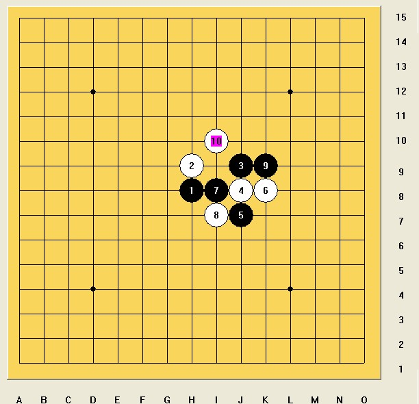

迎新春有奖答题(第三题）
首页
〓浩瀚〓棋社
#1 迎新春有奖答题(第三题） 作者：浩瀚铭剑 发表时间：2010-2-2 0:22:03

题目要求：黑先如何行棋，之后是什么结论，每个局部是黑优，白优还是平衡？请从实战意义上走出三种不同风格的黑棋走法（黑棋单色五手棋）
参与答题的朋友 把这题的答案发送到haohanqishe@126.com邮箱里面
［ 有志青年 于 2010-2-2 10:59:33 时奖励此帖[金币加 20 威望加1］
［ 浩瀚棋社清清 于 2010-2-7 22:32:13 时花20金币送鲜花一朵］
#2 Re:迎新春有奖答题(第三题） 作者：浩瀚铭剑 发表时间：2010-2-2 0:30:01
 由于这几天太忙 所以题目出晚了
由于这几天太忙 所以题目出晚了
#3 Re:迎新春有奖答题(第三题） 作者：心上人 发表时间：2010-2-2 16:30:31
里面的变化好复杂啊，已经发走了。请查收。
#4 Re:Re:迎新春有奖答题(第三题） 作者：浩瀚铭剑 发表时间：2010-2-2 21:41:07
引用：
原文由 心上人 发表于 2010-2-2 16:30:31 :
里面的变化好复杂啊，已经发走了。请查收。
收到
#5 Re:迎新春有奖答题(第三题） 作者：浩瀚棋社清清 发表时间：2010-2-7 22:32:57
 刚好做完发到邮箱里面了
刚好做完发到邮箱里面了
#6 Re:迎新春有奖答题(第三题） 作者：心上人 发表时间：2010-2-8 7:01:11
现在的答案好公布了吧